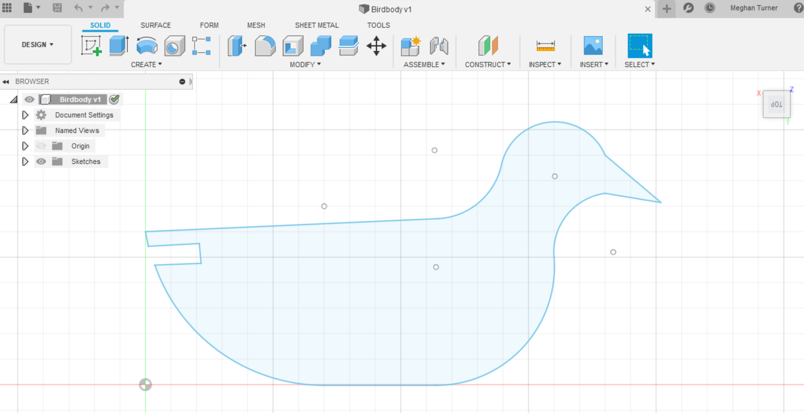

Objectives:
- Build a moving sculpture
- Use at least two different materials
In creating my flapping bird, I start by making projections of the body, tail, and wings so I could laser cut them out of cardboard. My idea was to have the tail connect to the body like we did with the construction sets. I chose cardboard because I needed the wings to be light so they could be pushed easily by another mechanism and because it was quick and easy to cut with the laser cutter. At first I made the slots to connect the tail and body to narrow and later fixed the design so they could fit. Here are the projections I used:
The obvious challenge to creating the bird was going from rotational to vertical motion. After many ideas on how to do this and failed attempts, I decided that by attaching a screw to the side of a gear, I could loop a piece of brass to make a piston-like structure. I had also constructed a simple box which held the bird on a brass pole and would have holes for the two shafts and gears needed to make both wings flap.
I knew I needed the wings to just be lightly attached the body so they wouldn't fall to any one side so I ended up wrapping thing wire in or around the wings and then looping it around pieces of paperclip stuck in the top of the bird. Since I was running out of time, I had to attach the brass rod from the gears to the underside of the wings with just masking tape.
After much patience, trial and error, and excessive amounts of hot glue, I was able to creat a handcrank that would make both wings rise and fall at the same time.
It's a bird, it's a plane, it's a PS-70 fever dream!(But also a bird)

To start with, I would consider remaking the bird and the box with all wood or a sturdier material. I also want to find a way to keep the second gear not attached to the hand crank from sliding out of place. I'll be using tubing to act as a washer to see if that leads to any Improvement. If I were to do it again, I would also think of a better way of attaching the wings in a cleaner, more effective way.